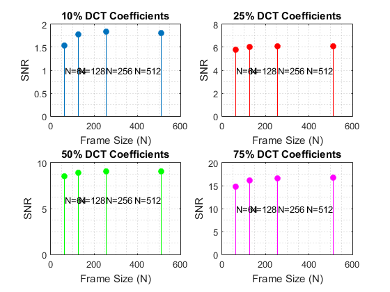

Contents
Main
[audio,fs] = audioread('sample.wav');
N = size(audio);
F = [64 128 256 512];
P = [0.1 0.25 0.50 0.75];
ssnrs=[];
ssnrs2=[];
for j = 1 : length(P)
p = P(j);
snrs = [];
snrs2 = [];
for i = 1 : length(F)
f = F(i);
y = FirstS(audio,f,p);
snrs = [snrs SSNR(audio',y)];
y2 = Dominant(audio,f,p);
snrs2 = [snrs2 SSNR(audio',y2)];
end
ssnrs = [ssnrs;snrs];
ssnrs2 = [ssnrs2;snrs2];
end
SNRs for FIRST COEFFICIENTS
figure(1)
subplot(2,2,1);
stem(F, ssnrs(1,:));
title('p=10%');
subplot(2,2,2);
stem(F, ssnrs(2,:));
title('p=25%');
subplot(2,2,3);
stem(F, ssnrs(3,:));
title('p=50%');
subplot(2,2,4);
stem(F, ssnrs(4,:));
title('p=75%')

SNRs for DOMINANT COEFFICIENTS
title('Dominant p Samples')
stem(F, ssnrs2(1,:));
title('p=10%');
stem(F, ssnrs2(2,:));
title('p=25%');
stem(F, ssnrs2(3,:));
title('p=50%');
stem(F, ssnrs2(4,:));
title('p=75%');